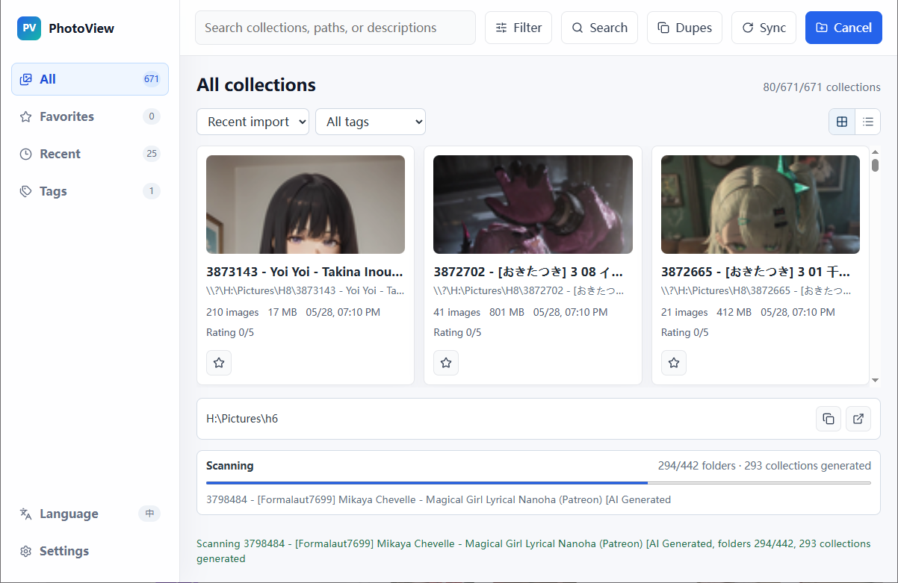
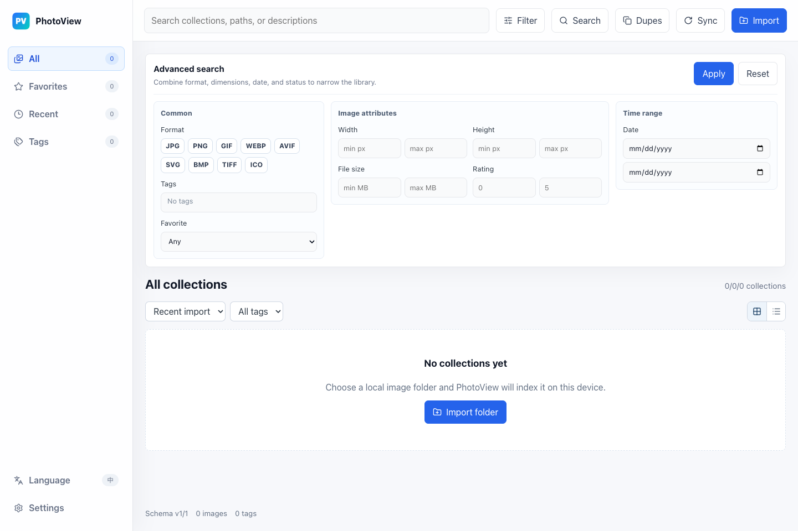
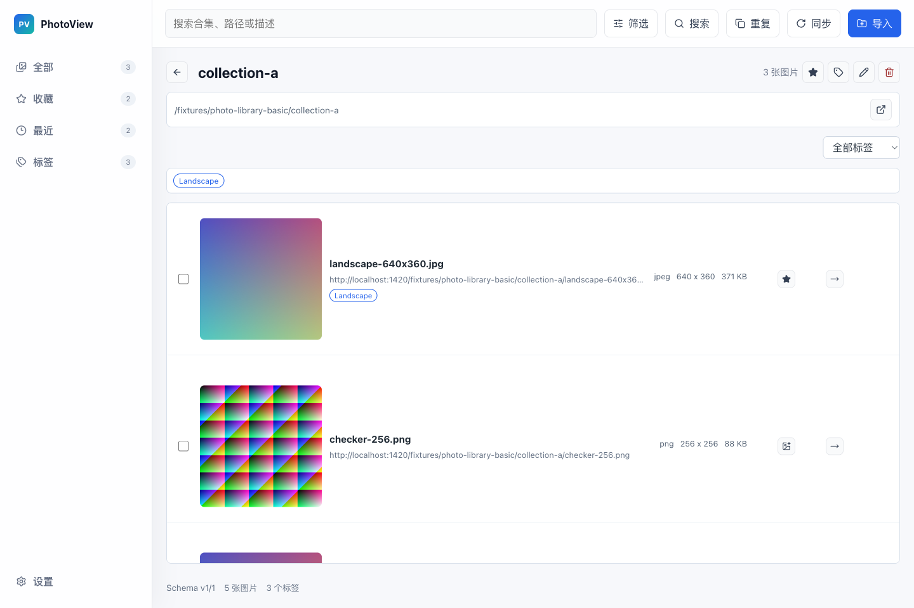

Existing folders become collections
Pick a folder, scan images, build thumbnails, and keep collection metadata without changing your actual files.
Turn existing image folders into browsable, searchable collections. Keep your files where they are, tag what matters, and clean up duplicates across WebP, GIF, AVIF, long images, wallpapers, and image packs.
Free to use. If it fits your library, a GitHub star is welcome; sponsorship simply helps keep development moving.
Not just another image viewer
PhotoView is not trying to replace Lightroom or become a cloud photo service. It is a small local workspace for people who already have many image folders and want them to be easier to browse, find, tag, and clean.
Pick a folder, scan images, build thumbnails, and keep collection metadata without changing your actual files.
Collection cards, grid/list views, and a built-in viewer make large local libraries easier to inspect.
Built for messy downloaded folders where modern formats, tall images, and mixed file types are normal.
Add the state that plain folders do not have, then find images later without relying only on filenames.
SHA256 exact duplicate checks and pHash visual similarity checks help clean repeated downloads and near-duplicates.
The SQLite database stays on your device. Deletions go to the system trash by default to reduce accidental loss.
Real interface
No cloud onboarding and no forced import ceremony. Open the app and you get collections, search, filters, duplicate detection, and sync controls.



Who it is for
The users are people who already feel the pain of local image folders.
Many download sources, many folders, inconsistent names, and a need to quickly preview, find, and dedupe.
Tall images, WebP, GIF, and mixed formats should not break everyday browsing.
Tag by project, style, or use case, then recover images later through search and filters.
Browse, rate, move, and clean batches of generated images after a large run.
Positioning
If you only open a few photos, the default viewer may be enough. If you need RAW editing, Lightroom is the better tool. PhotoView focuses on local folder organization.
No account, no folder migration. Download PhotoView, point it at an existing image folder, and see whether search, tags, batch cleanup, and duplicate checks save you time. If it helps, a star or a short bug report is already valuable.
FAQ
No. Indexing, thumbnails, search, and duplicate checks run locally.
Importing and browsing do not move your files. File operations only happen when you explicitly rename, move, copy, or delete.
The core app is free to use. Donations or supporter downloads are optional ways to fund development; they do not unlock hidden core features.
Not primarily. If you need RAW editing and a full photography workflow, this is probably not the right tool.